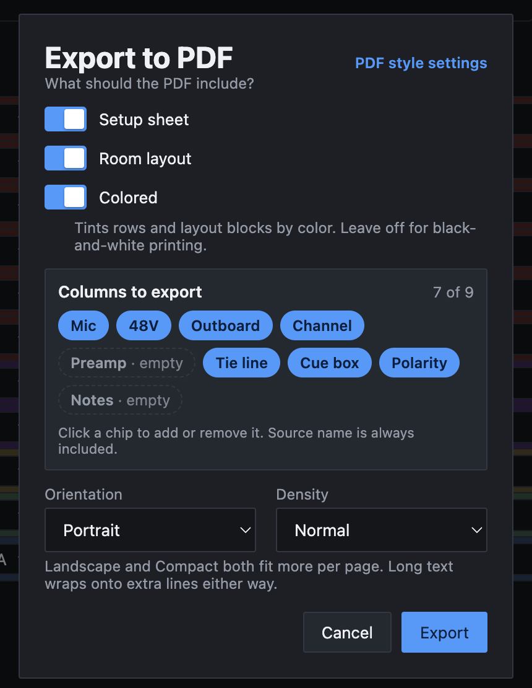
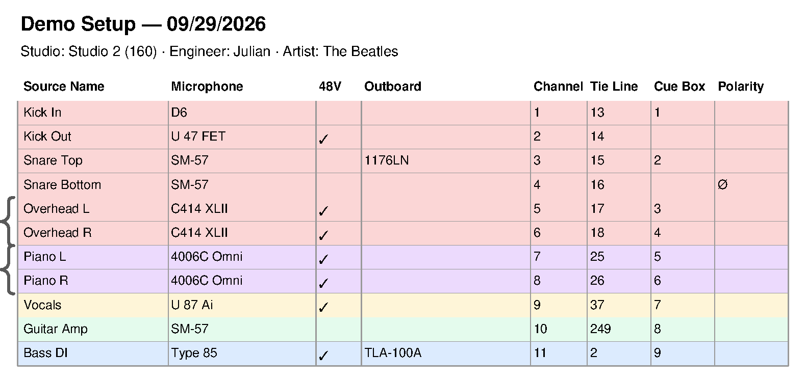
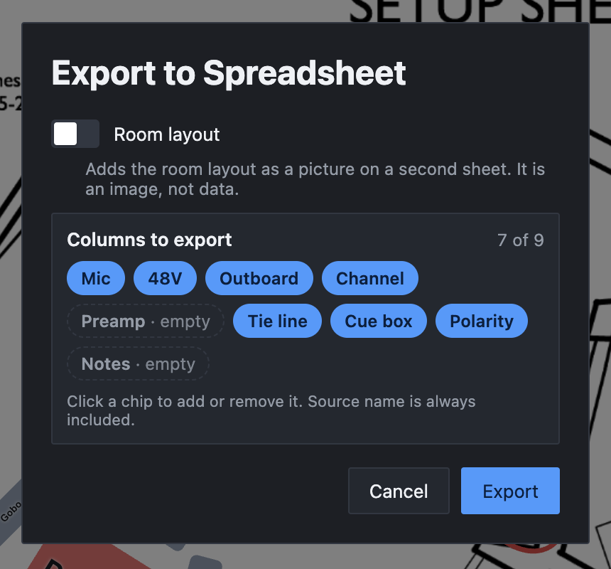

Part 3
Printing and exporting
A setup leaves the app as a PDF to print or hand out, or as a spreadsheet to share or edit elsewhere. This part explains every export option, what ends up on the page, and how to set up the look of your PDFs once.
Exporting a PDF
-
Open the export dialog
Press ⌘E, or choose File → Export PDF…. This works from Table Mode and Layout Mode alike.
-
Choose what to include
Set the options in the Export to PDF dialog. They're explained below. Most of the time the defaults are what you want.
-
Export and save
Click Export and choose where to save the file. Its name starts as the setup's name.
The app saves the setup first, so the PDF always matches what's on screen. When it's done, the toolbar shows Exported to followed by where the file went.
The PDF options

Setup sheet and Room layout
Under What should the PDF include?, switch on either or both:
- Setup sheet: the title, details and the table of sources.
- Room layout: the floor plan from Layout Mode, on a page of its own at the end. This switch only appears when the setup has a room layout (the studio's, its own, or a blank sheet). See Part 4.
At least one has to be on. With both off, Export is grayed out.
Colored
With Colored on, rows are tinted with the colors you gave them, and blocks on the floor plan keep their colors. Turn it off when you're printing in black and white. The app then makes the pages read well in gray, as described in Black-and-white printing.
Columns to export
Each chip is one column of the sheet. A filled chip goes in the PDF; a dashed one is left out. The count at the top right, such as 7 of 9, tells you how many are going in. Source name is always included, so it has no chip.
- A column starts off when no row uses it (marked empty) or when it's hidden in the editor (marked hidden). That's why blank columns don't waste space on the page.
- Click any chip to include or leave out that column. You can include a hidden column without showing it again in the editor.
- Your changes are remembered for this setup. Columns you haven't touched keep following the sheet, so if you fill in a column that used to be empty, its chip turns on by itself next time.
Stereo Link has no chip. Linked pairs print as a brace in the margin instead.
Orientation and Density
Orientation is Portrait or Landscape. Density is Normal or Compact, which uses smaller type and tighter rows. Landscape and Compact both fit more on a page, and long text wraps onto extra lines either way.
Both affect only the setup sheet pages, so they're grayed out when Setup sheet is off. They start at Portrait and Normal each time you open the dialog.
PDF style settings
The PDF style settings link at the top right closes the dialog and opens Settings → PDF Layout. See PDF style settings below.
The Setup sheet and Room layout choice, and the Colored setting, carry over to your next export of any setup. They're saved when an export finishes. Column chips are remembered per setup. Orientation and Density are not remembered.
What's in the PDF
Setup sheet pages are US Letter size. They read from top to bottom like this:

- The title: the setup name and session date, in bold. The date uses the format you chose in Settings.
- The details line: Studio, Engineer and Artist, separated by dots, for example Studio: Studio 2 (160) · Engineer: Julian · Artist: The Beatles. The building appears in brackets for Berklee rooms. Anything left blank is skipped, and a quick setup has no studio to show.
- Session notes, in gray, with your line breaks kept.
- The table, with the column headings repeated at the top of every page. A row is never split across two pages.
How the table reads
- Outboard is one column, however many outboard columns the setup has. A row's gear is listed in order, separated by commas.
- ✓ in the 48V column means phantom power is on.
- Ø in the Polarity column means polarity is flipped.
- A brace in the left margin joins the two rows of a stereo pair.
- "!" before a tie line number means another row uses the same tie line. Fix it before the session.
- Row tints appear when Colored is on. They're printed pale, so black text stays easy to read.
The columns appear in the same order as in the editor. Their print headings are slightly longer than on screen, such as Microphone for Mic.
The room layout page
When Room layout is on, the floor plan gets the last page. The page is sized to the plan itself, so a plan made from a PDF keeps that PDF's page size. The plan prints at full size however far you've zoomed or however small the window is, and selection handles never print.
Markup you've hidden with the eye button is left off the page. Show it again before exporting if you want it printed. See Part 5.
If the floor plan is open in the pop-out window, the export collects it from there. If that window doesn't answer within a few seconds, the PDF is saved without the layout page and the toolbar says so. If you were exporting the layout page on its own, nothing is saved and the toolbar asks you to bring the Layout window to the front. Do that and export again.
Black-and-white printing
Turning Colored off doesn't just drop the colors. It changes a few things so the pages still read clearly on a black-and-white printer.
On the setup sheet, rows have no tint. Zebra striping, if you've turned it on, still applies.
On the room layout page:
- The floor plan drawing is turned to grayscale.
- Every block gets the same light gray fill with a thin gray border, and its label prints dark. Custom label colors are ignored, since white text on a gray block would vanish.
- Sticky notes turn white with a thin gray edge. All note text prints dark.
- Markup prints dark, whatever its color. Highlighter strokes print as a see-through gray band.
- Hidden markup is left off, just as it is in color.
None of this changes the plan on screen. It applies only to the exported page.
Exporting a spreadsheet
Press ⌘⇧E, or choose File → Export Spreadsheet…, to save the sheet as an Excel workbook (.xlsx). It opens in Excel, Numbers and Google Sheets.

- Room layout adds the floor plan as a picture on a second sheet. As the dialog says, it's an image, not data. The switch only appears when the setup has a room layout, starts off, and remembers your choice.
- Columns to export works exactly as in the PDF dialog, and the two share the same choices for each setup.
Export is already selected when the dialog opens, so ⌘⇧E then Return exports straight away.
What's in the file
- One sheet named after the setup, holding just the table. There's no title, details line or session notes.
- Source name first, then your chosen columns in the editor's order.
- Each outboard column stays separate, headed Outboard, Outboard 2 and so on.
- 48V and Polarity read Yes when ticked.
- A bold header row that stays in place as you scroll.
- Row colors at full strength, with the text color picked so it stays readable. Spreadsheets always keep row colors; there's no black-and-white option.
- If you included the room layout, a second sheet called Room layout with the floor plan in color, at its true print size.
If the setup has no room layout, or the pop-out window doesn't answer, the spreadsheet is still saved without the picture, and the toolbar message says the sheet was skipped.
PDF style settings
The look of the table is set once in Settings → PDF Layout and applies to every PDF you export. Open it from the Settings button, or from the PDF style settings link in the export dialog.

- Table grid lines
- Full grid (every cell) is the default. The others are Row lines only, Outer border only, and None (header underline only).
- Zebra striping
- Shades every other row in pale gray to help your eye follow a row across. When Colored is on, rows with a color alternate between a light and a darker shade of that color instead.
- Shaded header row
- Fills the row of column headings with a shade, instead of only a thin line under it.
- Accent color
- Tints the title, the grid lines, the header shading and the stereo braces. Choose No color to keep everything neutral gray and black.
- Session date format
- How the date reads in the title. Choose MM/DD/YYYY (07/15/2026) (the default), Month D, YYYY (July 15, 2026), YYYY-MM-DD (2026-07-15) or DD/MM/YYYY (15/07/2026). Under the menu, the app shows how today's date would look.
Changes take effect on your next export. They don't affect spreadsheets.